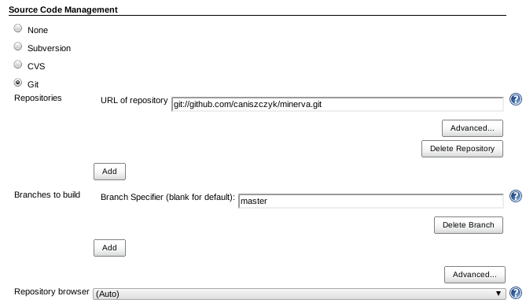
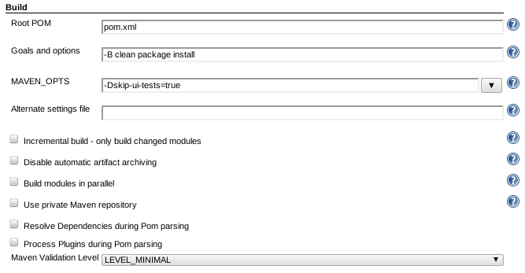
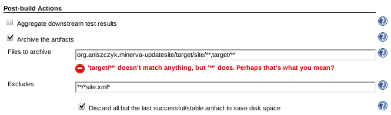

| Hudson (Jenkins) | ||
|---|---|---|
|
|
|
|
| Signing | Publishing | |
There's a hudson instance that's available for eclipse.org committers.
To run your Tycho build in Hudson, it's very easy.
The first step is to select the correct Git repository to fetch from.

The next step is to setup the right Maven goals to run.

The final step is to ensure we publish our repository artifacts when done.

That's it, you should see the latest successful artifacts after the build is complete.
|
|

|
|
| Signing | Publishing |